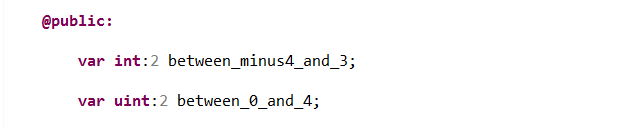
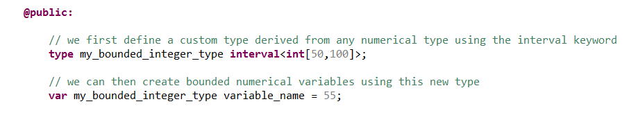

We can create sub-types of numerical primitive types that implements boundary conditions on the value of the variable. There are two ways of doing so.
By default, calculations on numbers are performed with arbitrary precision (according to "gnu/gmp" i.e. GNU Multiple Precision Arithmetic Library). But it is possible to give limits to types by defining an interval thanks to powers of two :
The concrete syntax is the following :
Less symmetrical intervals can be defined via the "interval" type. This is the "anIntervalTypeDefinition" we've seen above. Intervals are defined upon a "support", which must be a primitive numerical type.
The standard ISO notation will be used to tell if the interval is open or closed, i.e. if its limits are included or not :
To define a numerical variable which value is bounded to a certain interval, use the following syntax :
